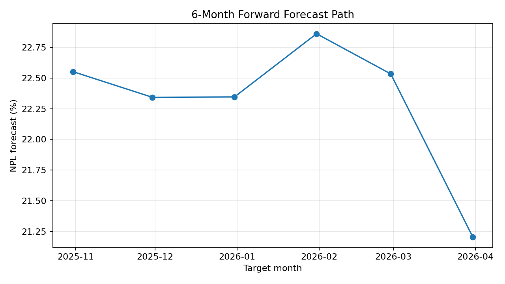
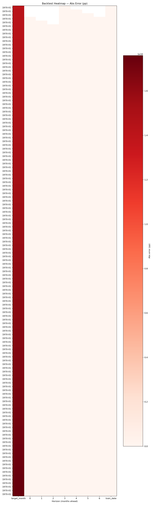
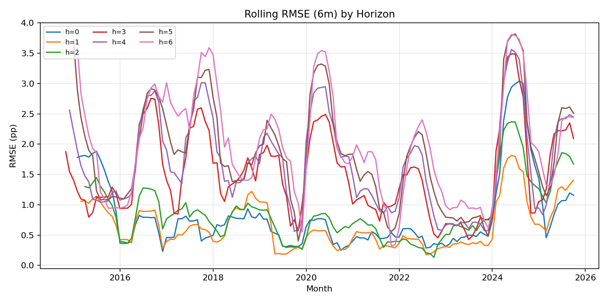
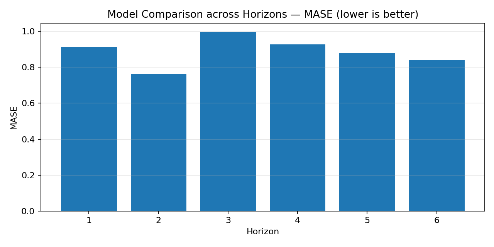

| target_month | rmse_pp | mae_pp | smape | mase | r2_log | n_obs | train_date |
|---|---|---|---|---|---|---|---|
| 2015-02-28 | 1.0596374804094442 | 1.0596374804094442 | 8.859950239137309 | nan | nan | 1.0 | 2026-03-02 14:46:01.460184 |
| 2015-03-31 | 1.0701946550920596 | 1.0701946550920596 | 8.952173096831823 | nan | nan | 1.0 | 2026-03-02 14:46:01.460184 |
| 2015-04-30 | 0.9400591188982155 | 0.9400591188982155 | 7.821020811513367 | nan | nan | 1.0 | 2026-03-02 14:46:01.460184 |
| 2015-05-31 | 1.2959579760149165 | 1.2959579760149165 | 10.944021601912352 | nan | nan | 1.0 | 2026-03-02 14:46:01.460184 |
| 2015-06-30 | 1.2967552477434285 | 1.2967552477434285 | 10.951123006116214 | nan | nan | 1.0 | 2026-03-02 14:46:01.460184 |
| 2015-07-31 | 0.04339002062771513 | 0.04339002062771513 | 0.33094248609269844 | nan | nan | 1.0 | 2026-03-02 14:46:01.460184 |
| 2015-08-31 | 0.1336648356693857 | 0.1336648356693857 | 1.0213829268395092 | nan | nan | 1.0 | 2026-03-02 14:46:01.460184 |
| 2015-09-30 | 0.507011964566578 | 0.507011964566578 | 3.830584019478177 | nan | nan | 1.0 | 2026-03-02 14:46:01.460184 |
| 2015-10-31 | 0.5354778046958302 | 0.5354778046958302 | 3.879010387152966 | nan | nan | 1.0 | 2026-03-02 14:46:01.460184 |
| 2015-11-30 | 0.6067145977012931 | 0.6067145977012931 | 4.390091774571357 | nan | nan | 1.0 | 2026-03-02 14:46:01.460184 |
| 2015-12-31 | 0.39292815510895984 | 0.39292815510895984 | 2.7141258185380703 | nan | nan | 1.0 | 2026-03-02 14:46:01.460184 |
| 2016-01-31 | 0.12002220805953101 | 0.12002220805953101 | 0.8254070209559287 | nan | nan | 1.0 | 2026-03-02 14:46:01.460184 |
| target_month | residual_pp |
|---|---|
| 2015-02-28 | 1.0596374804094442 |
| 2015-03-31 | 1.0701946550920596 |
| 2015-04-30 | 0.9400591188982155 |
| 2015-05-31 | 1.2959579760149165 |
| 2015-06-30 | 1.2967552477434285 |
| 2015-07-31 | 0.04339002062771513 |
| 2015-08-31 | 0.1336648356693857 |
| 2015-09-30 | -0.507011964566578 |
| 2015-10-31 | -0.5354778046958302 |
| 2015-11-30 | -0.6067145977012931 |
| 2015-12-31 | -0.39292815510895984 |
| 2016-01-31 | -0.12002220805953101 |
| metric | value | status | window_start | window_end | train_date |
|---|---|---|---|---|---|
| PSI::NPL | 0.040546510810399755 | OK | 2014-01-31..2016-01-31 | 2024-10-31..2025-09-30 | 2026-03-02 14:46:01.627840 |
| PSI::GDP | 23.99171704792967 | ALERT | 2014-01-31..2016-01-31 | 2024-10-31..2025-09-30 | 2026-03-02 14:46:01.627840 |
| PSI::DEGU | 14.311819518172914 | ALERT | 2014-01-31..2016-01-31 | 2024-10-31..2025-09-30 | 2026-03-02 14:46:01.627840 |
| PSI::CBLR | 6.23546420969415 | ALERT | 2014-01-31..2016-01-31 | 2024-10-31..2025-09-30 | 2026-03-02 14:46:01.627840 |
| PSI::GLA | 8.827806522640238 | ALERT | 2014-01-31..2016-01-31 | 2024-10-31..2025-09-30 | 2026-03-02 14:46:01.627840 |

[CSV]
[CSV]
[CSV]
[CSV]